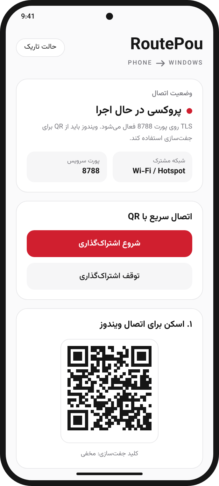
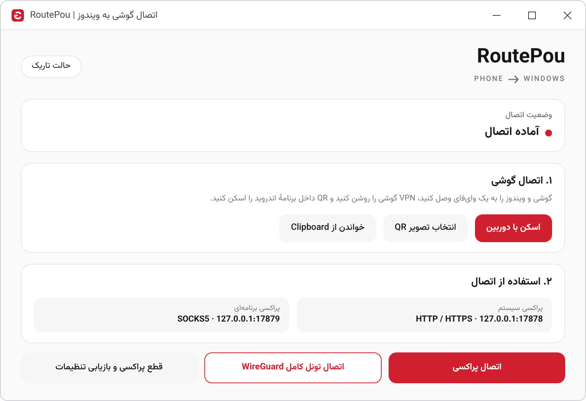

اینترنت گوشی شما،
روی کامپیوتر
Your phone's internet,
on your computer
RoutePou اینترنت و VPN گوشی اندروید را با یک اسکن QR و روی همان شبکه، به ویندوز میرساند.
RoutePou shares an Android phone's internet and VPN with a Windows PC. One QR scan, on the same network.
نحوه کارHow it works
سه قدم، بدون وارد کردن آدرس یا رمز.
Three steps. No addresses or passwords to type.
-
گوشی و ویندوز را به یک شبکه وصل کنید
Put the phone and the PC on one network
هر دو را به یک وایفای وصل کنید. اگر وایفای مشترک ندارید، هاتاسپات گوشی را روشن کنید. VPN گوشی را هم، در صورت نیاز، روشن کنید.
Use the same Wi-Fi, or turn on the phone's hotspot and join it from the PC. Switch on the phone's VPN if you use one.
-
در اندروید، اشتراکگذاری را شروع کنید
Start sharing on Android
برنامه یک کد QR نشان میدهد.
The app shows a QR code.
-
QR را در ویندوز اسکن کنید
Scan the QR code on Windows
ویندوز وصل میشود و اینترنت از مسیر گوشی میرود.
The PC connects and its traffic goes out through the phone.
داخل برنامهInside the app
یک صفحه در اندروید و یک صفحه در ویندوز؛ همین.
One screen on Android, one on Windows. That is all.


امنیتSecurity
اتصال فقط بین گوشی و کامپیوتر خود شماست.
The connection runs only between your phone and your computer.
رمزگذاری TLS
TLS encryption
ارتباط پراکسی با TLS 1.2 یا 1.3 انجام میشود. هر نصب اندروید کلید و گواهی مخصوص خودش را دارد و ویندوز فقط همان گواهی را میپذیرد.
Proxy traffic uses TLS 1.2 or 1.3. Every Android install has its own key and certificate, and Windows accepts only that certificate.
جفتسازی با QR
Pairing by QR
QR شامل کلید جفتسازی است. هر کسی که آن را ببیند میتواند از اتصال گوشی شما استفاده کند، پس آن را محرمانه نگه دارید. هر زمان بخواهید میتوانید کلید تازه بسازید.
The QR code carries the pairing key. Anyone who sees it can use your phone's connection, so keep it private. You can create a new key at any time.
فقط شبکهی مورد اعتماد
Trusted networks only
فقط روی وایفای یا هاتاسپاتی استفاده کنید که به آن اعتماد دارید. دستگاههای دیگر شبکه بدون کلید جفتسازی نمیتوانند از آن استفاده کنند.
Use RoutePou only on a Wi-Fi network or hotspot you trust. Other devices on it cannot use the connection without the pairing key.
تونل کامل WireGuard
WireGuard full tunnel
در این حالت کلیدها فقط در حافظه میمانند و هرگز روی دیسک، در خط فرمان یا در گزارشها نوشته نمیشوند.
In this mode the keys stay in memory. They are never written to disk, to a command line or to a log.
RoutePou هنوز ممیزی امنیتی مستقل نداشته است. حساب کاربری، تبلیغ و ردیاب ندارد.
RoutePou has not had an independent security audit. It has no accounts, no ads and no trackers.
مجوزLicense
نرمافزار آزاد، با مجوز GNU GPL نسخه ۳.
Free software, under the GNU GPL version 3.
میتوانید RoutePou را آزادانه استفاده، بررسی، تغییر و منتشر کنید. بخشی از موتور اتصال بر پایهی یک پروژهی متنباز با مجوز GPL-3.0 ساخته شده است، برای همین کل برنامه با همین مجوز منتشر میشود. کد منبع کامل هر نسخه همراه همان نسخه در دسترس است.
You may use, study, change and share RoutePou freely. Part of the connection engine is built on an open-source project under GPL-3.0, so the whole app is released under the same license. The complete source code of every release is available with that release.
اجزای متنباز
Open-source components
- WireGuard (wireguard-go, wireguard-windows)MIT
- gVisor netstackApache-2.0
- Go libraries (golang.org/x)BSD-3-Clause
- Bouncy CastleMIT
- ZXingApache-2.0
- zxing-cpp, OpenCVApache-2.0
- PillowHPND
- WintunWintun license
- Vazirmatn (the font of this page)SIL OFL 1.1
WireGuard یک نام تجاری ثبتشدهی Jason A. Donenfeld است. RoutePou با پروژهی WireGuard وابستگی یا تأییدیهای ندارد.
WireGuard is a registered trademark of Jason A. Donenfeld. RoutePou is not affiliated with or endorsed by the WireGuard project.